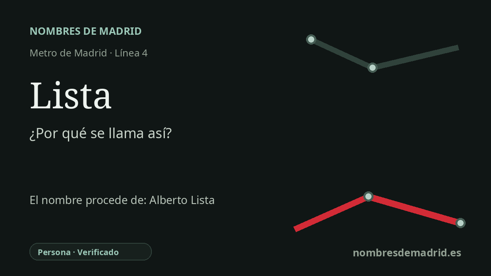

Publicado el · Investigación de Nombres de Madrid · Cómo verificamos cada origen · 6 fuentes consultadas
Respuesta rápida
La estación de Lista conserva el antiguo nombre de la calle de Lista, hoy calle de José Ortega y Gasset. Aquella vía homenajeaba a Alberto Rodríguez de Lista y Aragón, sacerdote sevillano, matemático, poeta, periodista, crítico y maestro influyente.
La historia del nombre
La estación de Lista conserva una huella de la nomenclatura antigua de Madrid. Cuando se inauguró en 1932, la vía próxima de eje este-oeste aún era conocida como calle de Lista; hoy es la calle de José Ortega y Gasset. El nombre del Metro mantiene, por tanto, una capa anterior del callejero del distrito de Salamanca.
Ese nombre antiguo aludía a Alberto Rodríguez de Lista y Aragón, conocido habitualmente como Alberto Lista. Nació en Triana, Sevilla, el 15 de octubre de 1775 y murió en Sevilla el 5 de octubre de 1848. Fue sacerdote, matemático, poeta, periodista, crítico literario, profesor y traductor, y su apellido quedó vinculado a una de las calles del Ensanche madrileño del siglo XIX.
La fama de Lista estuvo muy ligada a la enseñanza. Enseñó matemáticas y humanidades, pasó por varios centros docentes y se asoció al Colegio Libre de San Mateo de Madrid. La tradición biográfica y la Biblioteca Virtual Miguel de Cervantes subrayan su influencia sobre una amplia generación de alumnos y escritores, entre ellos Espronceda, Ventura de la Vega, Eugenio de Ochoa y otros.
La historia del transporte añade otra capa. Museos Metro Madrid documenta que la estación se inauguró el 17 de septiembre de 1932 dentro del ramal Goya-Diego de León, explotado inicialmente como línea 2B. En 1958 ese ramal se separó de la línea 2 y pasó a formar parte de la línea 4, lo que explica que una estación nacida en el primer entorno de la línea 2 figure hoy en la línea 4.
La calle de superficie cambió de nombre en 1955, año de la muerte de José Ortega y Gasset, cuando la calle de Lista pasó a llamarse calle de José Ortega y Gasset. La estación no siguió ese cambio. Por eso Lista es un buen ejemplo de nombre de Metro que remite todavía a un topónimo urbano anterior y, a través de él, al intelectual decimonónico Alberto Lista.